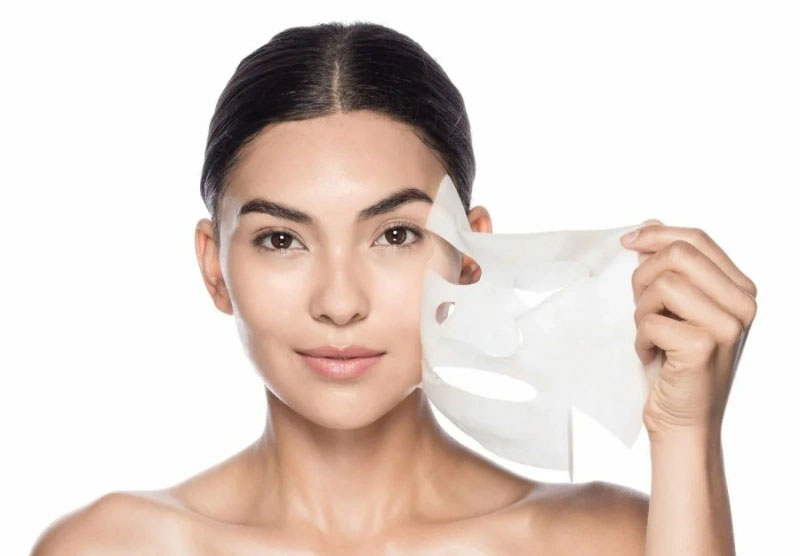
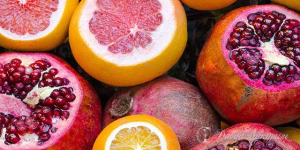
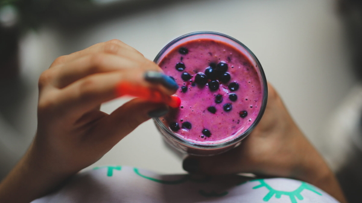

Лифтинг лица в домашних условиях –
В наше время многих женщин интересует, возможен ли лифтинг лица в домашних условиях. Это объясняется тем, что современные косметические салоны предоставляют услуги подобного плана по достаточно завышенной стоимости.
А дома любая женщина сможет сделать себе маску или массаж лица самостоятельно без лишних затрат. Так какие же бывают эффективные методы лифтинга лица в домашних условиях?
Что такое лифтинг?
Для чего вообще нужен лифтинг, и что он собой представляет? Лифтинг лица – это процедура, направленная на подтяжку кожи.
Данная манипуляция помогает устранить мимические и глубокие морщины, провисание кожных покровов. По статистике к ней прибегает каждая четвертая женщина.
Но не обязательно бежать к пластическому хирургу и ложиться под скальпель. Для начала необходимо опробовать исправить ситуацию без хирургического вмешательства. Для этого мы собрали самые эффективные методики, о которых пойдет речь ниже.

Все мы хорошо знаем, что в силу возрастных изменений наше тело становится менее упругим. Это касается и лица. Результат – морщины неизбежны.
Для того чтобы их устранить, кожу необходимо подтянуть. На сегодняшний день многие салоны красоты и клиники предоставляют такие услуги. Но благодаря современным технологиям любая женщина может приготовить и самостоятельно в домашних условиях маску для лифтинга.
Сразу хотелось бы заметить, что не стоит ожидать ошеломляющего результата от пары процедур. Конечно, лицо уже никогда не станет таким, каким оно было в юности.
А если вы будете регулярно проводить лифтинг-процедуры дома самостоятельно, то результат не заставит себя долго ждать. Ваша кожа будет более подтянутой, исчезнут некоторые мимические морщины, а вы будете выглядеть гораздо свежее.
3 салонных процедуры лифтинга для лица
Перед тем, как приступать к изучению домашних хитростей, давайте разберемся, как подтягивают кожный покров в салонных условиях.
Существует несколько процедур для подтяжки кожи, которые пользуются большим спросом. Главным плюсом является то, что не нарушается целостность кожного покрова, так как эти методики не предполагают разрезов или проколов. Основные из них:
- RF-лифтинг. На лицо воздействуют радиоволны, излучаемые специальным аппаратом. В результате сокращаются поры, убираются морщины, а кожа подтягивается.
- Микротоковая терапия. Она представляет собой лифтинг-массаж, который способствует выведению из организма вредных веществ. С помощью этой процедуры стимулируется регенерация клеток.
- Ультразвуковой лифтинг. Специальный аппарат образует волну, которая воздействует на клетки кожи, стимулируя циркуляцию крови.
К сожалению, такие салонные процедуры стоят недешево, поэтому мы вам предлагаем воспользоваться специальными масками с лифтинг эффектом, которые дадут схожий результат, но не потребуют больших затрат.
Прежде чем прибегать к процедурам подобного плана, внимательно изучите показания и противопоказания, а также их воздействие на организм.
Маски с лифтинг-эффектом в домашних условиях
Быстрый эффект от лифтинг-масок для лица в домашних условиях вполне возможен. Для его достижения нужно осуществлять данные процедуры регулярно.
Но прежде чем попытаться подтянуть кожу самостоятельно, следует разобраться, что это такое, и чего можно ожидать от лифтинга.

Такие маски питают клетки кожи, делая ее более увлажненной и эластичной. Они устраняют сухость, а также неглубокие морщины.
Правильно подобранная маска поспособствует замедлению процесса возрастных изменений. Данная процедура имеет большое количество преимуществ. Основные из них:
- кожа становится подтянутой и эластичной;
- в глубоких слоях эпидермиса начинает вырабатываться коллаген;
- подтягивается лицо, контур приобретает четкость линий, значительно уменьшаются зоны провисания;
- устраняются морщины в области вокруг глаз;
- убираются морщины в зоне носогубных складок;
- исчезает двойной подбородок;
- значительно увлажняется кожа, исчезает сухость.
Лифтинг маска для лица в домашних условиях после 50 лет способна хоть и не полностью заменить собой дорогостоящие процедуры в салонах красоты, но привести к положительным изменениям.
Только для достижения желаемого эффекта необходимо строго соблюдать все правила и готовить маски по рецептам.
Еще одно преимущество домашней процедуры заключается в том, что она имеет минимальное количество противопоказаний.
Используйте для лифтинга только проверенные рецепты. Для этого внимательно изучите просторы Интернета и прочтите отзывы, оставленные женщинами, которые ранее пользовались тем или иным средством.
Группы (косметических) лифтинг средств
В качестве лифтинг-маски для лица в домашних условиях женщинам в 40 или 50 лет подойдут только проверенные средства. Отдавайте предпочтение тем косметическим препаратам, которые подходят именно вашему типу лица.
Они обязательно должны содержать в своем составе исключительно натуральные компоненты, и никаких вредных веществ. В противном случае такая процедура окажет отрицательное влияние на вашу кожу, и вы добьетесь обратных результатов.
Вообще, если вы желаете проводить процедуры подобного плана самостоятельно, то вам обязательно следует купить сразу две группы косметических средств. Первая необходима для легкой подтяжки поверхностных слоев, а вторая – для оказания эффекта глубокого лифтинга.

- Первая группа средств сформирует на вашей коже тоненькую пленку, которая будет поддерживать правильный овал лица, а также способствовать натяжению кожи. Это могут быть кремы, сыворотки или маски, на упаковках которых будет значиться «косметика с моментальным эффектом лифтинга». Результаты вы увидите уже после первого использования такой косметики. Ваше лицо будет выглядеть свежее, мелкие морщины исчезнут, а глубокие немного разгладятся. Но здесь есть один минус – эффект достаточно кратковременный. Как только вы воспользуетесь средством для снятия макияжа или умоетесь теплой водой, эта пленка смоется. Именно поэтому такую косметику следует использовать ежедневно, чтобы всегда быть в форме. И не стоит забывать о пилинге лица.
- Вторая группа кремов необходима для того, чтобы оказывать воздействие на более глубокие слои эпидермиса. Основные составляющие таких средств притягивают к себе соединительные ткани, которые значительно увеличиваются после использования косметики с эффектом глубокого лифтинга. Так, лицо станет более подтянутым, а его цвет лица – более естественным и свежим. Для того чтобы был виден выраженный эффект, эти маски необходимо использовать регулярно. Результаты вы заметите не моментально, как в случае с первой группой средств, но эффект продержится гораздо дольше.
Также стоит отметить, что есть специальные аппараты, с помощью которых осуществляется лифтинг-массаж в домашних условиях после 35-40 лет. Волны этого прибора способствуют приливу крови. Так, цвет лица становится свежее и естественнее.
Выбирая косметическое средство для лифтинга, непременно пообщайтесь со специалистом. Он внимательно осмотрит вашу кожу, и посоветует вам определенный препарат.
ТОП-5 эффективных средств

В продаже можно встретить множество разнообразных средств с лифтинг-эффектом. Но, все же, некоторые стали особенно популярными за счет своей высокой эффективности:
- Skinlite. Производитель представил лифтинговую маску, эффект от которой заметен спустя 2 недели применения. Стоит порядка 150 рублей.
- Almea H.A. Serum. Это дорогостоящая продукция. Такое название получила сыворотка с гиалуроном. Провоцирует усиление регенерации, увлажняет кожу и подтягивает ее. Ее цена составляет около 2,5 рублей.
- Laser Like System Serum. Это недорогая белорусская сыворотка. Она борется с морщинами и другими признаками старения. Она предназначена для женщин после 40 лет. Стоит не больше 200 рублей.
- Planeta Organica. Это российское средство моментального действия. Оно подтягивает кожу, немного уменьшает морщины, но пользоваться ею стоит ежедневно. Ее цена составляет 150-170 рублей.
- Capture. Это сыворотка от Диор. Она не только подтягивает, но и улучшает цвет кожи, увлажняет его.
Показания для лифтинга
Если вы хотите, осуществить лифтинг самостоятельно, то проводить данные процедуры необходимо только тогда, когда ваша кожа на самом деле в этом нуждается.
Для этого мы вам рекомендуем ознакомиться с основной группой показаний для проведения лифтинга.

В случае, если есть какие-нибудь показания из всех вышеперечисленных, вам непременно потребуется лифтинг-маска для лица, которую можно применять в домашних условиях. Учитывайте возрастные ограничения, так как средства женщинам после 40 или 50 лет отличаются.
Молодым девушкам нет необходимости проведения процедуры подобного плана. Но профилактические маски принесут пользу, так как ухаживать за лицом стоит с раннего возраста.
Противопоказания для лифтинга
К сожалению, данную процедуру абсолютно безопасной назвать нельзя. Она может оказать и негативное воздействие на кожу, а ожидаемого результата вы так и не получите.
Ведь существует и несколько противопоказаний для использования маски-лифтинг для лица в домашних условиях.
Если у вас может возникнуть аллергическая реакция на определенный компонент маски, применяйте его с осторожностью. Любое средство необходимо сначала протестировать.
ТОП-5 домашних рецептов лифтинг-масок
Существует немало хороших рецептов лифтинга для лица в домашних условиях. Мы вам предлагаем ознакомиться с основными из них:
- С огурцом. Для начала очистите огурец, и возьмите его мякоть. Взбейте эту смесь с белком. После этого добавьте одну чайную ложку оливкового масла и нанесите такую маску на лицо примерно на 10 минут. Она подойдет обладательницам сухого типа лица. Также маска хороша при наличии пигментных пятен.
- С белком. Отделите белок сырого яйца от желтка. Первый взбейте в густую пену. После этого возьмите столовую ложку свежевыжатого лимонного сока, добавьте к белку и перемешайте. Эта смесь хороша для получения мгновенного результата. Дело в том, что белок хорошо стягивает кожу, оказывая лифтинг эффект. Применяется в основном для жирного и комбинированного типа лица.
- С укропом. Немного укропа измельчите и перемешайте с хлопьями геркулеса, которые предварительно необходимо перемолоть. К полученной массе добавьте чайную ложку оливкового масла. Такая маска подпитает подкожные слои эпидермиса, что поспособствует устранению морщин.
- С желатином. Возьмите 3 ч. л. желатина, смешайте с 50 мл молока. Смесь должна постоять около часа, чтобы произошло разбухание желатина. Далее все это ставится на водяную баню, пока не получится однородная масса. Главное, чтобы смесь не закипела. К ней добавьте 3 ч. л. меда, перемешиваете и вводите столько же глицерина. Рекомендуется нанесение в пару слоев (между нанесением должно проходить пару минут). Такая маска должна побыть на лице четверть часа, далее ее удаляют ватными дисками.
- С дрожжами. Такая маска подойдет женщинам после 35 лет. Для ее приготовления требуется мало компонентов: сухие дрожжи и оливковое масло. Изначально разводится в теплой водичке первый ингредиент. Должна получиться смесь, похожая на крем. К такой массе добавляется масло. Маска накладывается на лицо, а удаляется после высыхания (она образует корку). Такой лифтинг еще помогает привести в норму работу сальных желез.
Применяйте маски регулярно для достижения эффекта.
Лифтинг-массаж в домашних условиях
Маска-лифтинг для лица в домашних условиях – это далеко не единственный способ сделать кожу более увлажненной и устранить некоторые морщины.
Существуют и другие методики, способствующие этому. Например, лифтинг-гимнастика для лица в домашних условиях. Иными словами – массаж.

Обратите внимание на основные приемы самомассажа с эффектом подтяжки:
- Похлопывающими движениями кончиками безымянного и среднего пальцев пройдитесь от крыльев носа к вискам.
- Такими же похлопывающими движениями пройдитесь от верхней губы к уху.
- Похлопывающими движениями пройдитесь от подбородка к ушам.
- Погладьте лоб тремя пальцами от надбровных дуг к волосам.
- Тыльной поверхностью ладони сделайте массаж в зоне под челюстью.
Прежде чем приступить к такому массажу, обязательно протрите лицо молочком для снятия макияжа. Помимо этого, увлажните руки перед этим мероприятием.
Также приносит пользу аква-массаж. Для этого нужно сначала приложить на пару секунд полотенце, которое предварительно смачивается в холодной воде. Далее его погружают в теплую воду и снова прикладывают к коже. Такие манипуляции стоит провести около 8-10 суток.
Полезно проводить по лицу ледяными кубиками. Но специалисты советуют замораживать не обычную воду, а отвары или молоко.
Что касается молочного льда, то он имеет массу плюсов. Регулярное применение такого метода улучшает производство коллагена, делает кожу упругой и эластичной, пропадает сухость, лицо не шелушится.